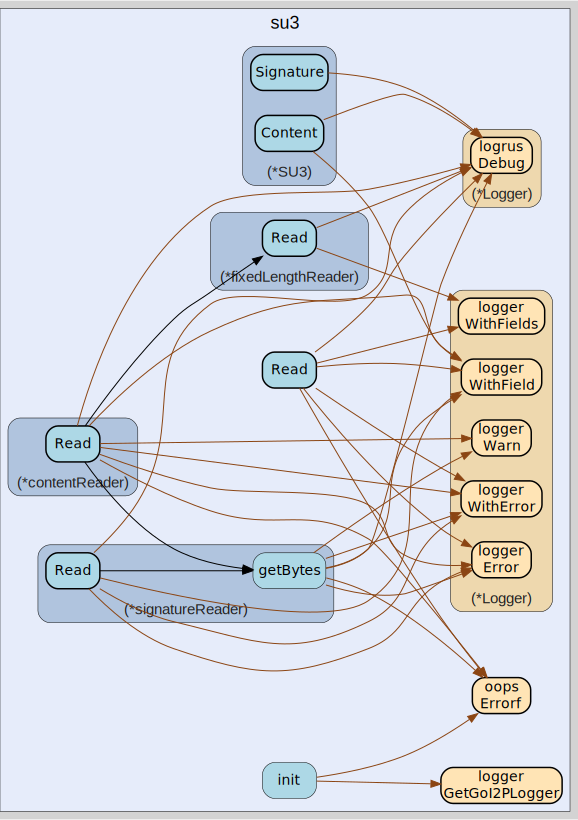

go-i2p/su3
README
su3
–
import "github.com/go-i2p/go-i2p/lib/su3"

Package su3 implements reading the SU3 file format.
SU3 files provide content that is signed by a known identity. They are used to distribute many types of data, including reseed files, plugins, blocklists, and more.
See: https://geti2p.net/spec/updates#su3-file-specification
The Read() function takes an io.Reader, and it returns a *SU3. The *SU3 contains the SU3 file metadata, such as the type of the content and the signer ID. In order to get the file contents, one must pass in the public key associated with the file’s signer, so that the signature can be validated. The content can still be read without passing in the key, but after returning the full content the error ErrInvalidSignature will be returned.
Example usage:
// Let's say we are reading an SU3 file from an HTTP body, which is an io.Reader.
su3File, err := su3.Read(body)
if err != nil {
// Handle error.
}
// Look up this signer's key.
key := somehow_lookup_the_key(su3File.SignerID)
// Read the content.
contentReader := su3File.Content(key)
bytes, err := ioutil.ReadAll(contentReader)
if errors.Is(err, su3.ErrInvalidSignature) {
// The signature is invalid, OR a nil key was provided.
} else if err != nil {
// Handle error.
}
If you want to parse from a []byte, you can wrap it like this:
mySU3FileBytes := []byte{0x00, 0x01, 0x02, 0x03}
su3File, err := su3.Read(bytes.NewReader(mySU3FileBytes))
One of the advantages of this library’s design is that you can avoid buffering the file contents in memory. Here’s how you would stream from an HTTP body directly to disk:
su3File, err := su3.Read(body)
if err != nil {
// Handle error.
}
// Look up this signer's key.
key := somehow_lookup_the_key(su3File.SignerID)
// Stream directly to disk.
f, err := os.Create("my_file.txt")
if err != nil {
// Handle error.
}
_, err := io.Copy(f, su3File.Content(key))
if errors.Is(err, su3.ErrInvalidSignature) {
// The signature is invalid, OR a nil key was provided.
// Don't trust the file, delete it!
} else if err != nil {
// Handle error.
}
Note: if you want to read the content, the Content() io.Reader must be read before the Signature() io.Reader. If you read the signature first, the content bytes will be thrown away. If you then attempt to read the content, you will get an error. For clarification, see TestReadSignatureFirst.
Usage
var (
ErrMissingMagicBytes = oops.Errorf("missing magic bytes")
ErrMissingUnusedByte6 = oops.Errorf("missing unused byte 6")
ErrMissingFileFormatVersion = oops.Errorf("missing or incorrect file format version")
ErrMissingSignatureType = oops.Errorf("missing or invalid signature type")
ErrUnsupportedSignatureType = oops.Errorf("unsupported signature type")
ErrMissingSignatureLength = oops.Errorf("missing signature length")
ErrMissingUnusedByte12 = oops.Errorf("missing unused byte 12")
ErrMissingVersionLength = oops.Errorf("missing version length")
ErrVersionTooShort = oops.Errorf("version length too short")
ErrMissingUnusedByte14 = oops.Errorf("missing unused byte 14")
ErrMissingSignerIDLength = oops.Errorf("missing signer ID length")
ErrMissingContentLength = oops.Errorf("missing content length")
ErrMissingUnusedByte24 = oops.Errorf("missing unused byte 24")
ErrMissingFileType = oops.Errorf("missing or invalid file type")
ErrMissingUnusedByte26 = oops.Errorf("missing unused byte 26")
ErrMissingContentType = oops.Errorf("missing or invalid content type")
ErrMissingUnusedBytes28To39 = oops.Errorf("missing unused bytes 28-39")
ErrMissingVersion = oops.Errorf("missing version")
ErrMissingSignerID = oops.Errorf("missing signer ID")
ErrMissingContent = oops.Errorf("missing content")
ErrMissingSignature = oops.Errorf("missing signature")
ErrInvalidPublicKey = oops.Errorf("invalid public key")
ErrInvalidSignature = oops.Errorf("invalid signature")
)
type ContentType
type ContentType string
const (
UNKNOWN ContentType = "unknown"
ROUTER_UPDATE ContentType = "router_update"
PLUGIN ContentType = "plugin"
RESEED ContentType = "reseed"
NEWS ContentType = "news"
BLOCKLIST ContentType = "blocklist"
)
type FileType
type FileType string
const (
ZIP FileType = "zip"
XML FileType = "xml"
HTML FileType = "html"
XML_GZIP FileType = "xml.gz"
TXT_GZIP FileType = "txt.gz"
DMG FileType = "dmg"
EXE FileType = "exe"
)
type SU3
type SU3 struct {
SignatureType SignatureType
SignatureLength uint16
ContentLength uint64
FileType FileType
ContentType ContentType
Version string
SignerID string
}
func Read
func Read(reader io.Reader) (su3 *SU3, err error)
func (*SU3) Content
func (su3 *SU3) Content(publicKey interface{}) io.Reader
func (*SU3) Signature
func (su3 *SU3) Signature() io.Reader
type SignatureType
type SignatureType string
const (
DSA_SHA1 SignatureType = "DSA-SHA1"
ECDSA_SHA256_P256 SignatureType = "ECDSA-SHA256-P256"
ECDSA_SHA384_P384 SignatureType = "ECDSA-SHA384-P384"
ECDSA_SHA512_P521 SignatureType = "ECDSA-SHA512-P521"
RSA_SHA256_2048 SignatureType = "RSA-SHA256-2048"
RSA_SHA384_3072 SignatureType = "RSA-SHA384-3072"
RSA_SHA512_4096 SignatureType = "RSA-SHA512-4096"
EdDSA_SHA512_Ed25519ph SignatureType = "EdDSA-SHA512-Ed25519ph"
)
su3
github.com/go-i2p/go-i2p/lib/su3